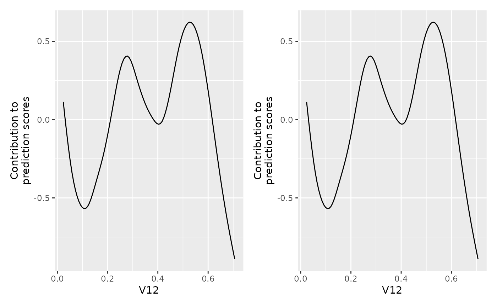

Production mode
basic-production-model.Rmd## Loading required package: mlr3Storing the complete [Compboost] object requires to save a lot of data:
- Data matrices of the raw data.
- Transformed data matrices. Each base learner creates a design matrix with (potentially) multiple columns.
Hence, compboost allows to store the model without the
data. Within this vignettes, this is also called production mode since
it is the more practical case when running the model in production.
Store model without data
To do so, just call:
dat = mlr3::tsk("sonar")$data()
cboost = boostSplines(dat, "Class", oob_fraction = 0.3)
#> 1/100 risk = 0.69 oob_risk = 0.68 time = 0
#> 2/100 risk = 0.68 oob_risk = 0.67 time = 1031
#> 4/100 risk = 0.68 oob_risk = 0.67 time = 2801
#> 6/100 risk = 0.67 oob_risk = 0.67 time = 4597
#> 8/100 risk = 0.66 oob_risk = 0.66 time = 6368
#> 10/100 risk = 0.65 oob_risk = 0.66 time = 28910
#> 12/100 risk = 0.65 oob_risk = 0.65 time = 30700
#> 14/100 risk = 0.64 oob_risk = 0.65 time = 32491
#> 16/100 risk = 0.63 oob_risk = 0.65 time = 34251
#> 18/100 risk = 0.63 oob_risk = 0.64 time = 36035
#> 20/100 risk = 0.62 oob_risk = 0.64 time = 37795
#> 22/100 risk = 0.62 oob_risk = 0.64 time = 39604
#> 24/100 risk = 0.61 oob_risk = 0.64 time = 41355
#> 26/100 risk = 0.61 oob_risk = 0.63 time = 43118
#> 28/100 risk = 0.6 oob_risk = 0.63 time = 44922
#> 30/100 risk = 0.6 oob_risk = 0.63 time = 46684
#> 32/100 risk = 0.59 oob_risk = 0.63 time = 48451
#> 34/100 risk = 0.59 oob_risk = 0.62 time = 50201
#> 36/100 risk = 0.59 oob_risk = 0.62 time = 51955
#> 38/100 risk = 0.58 oob_risk = 0.62 time = 53825
#> 40/100 risk = 0.58 oob_risk = 0.62 time = 55695
#> 42/100 risk = 0.57 oob_risk = 0.62 time = 57628
#> 44/100 risk = 0.57 oob_risk = 0.62 time = 59483
#> 46/100 risk = 0.57 oob_risk = 0.61 time = 61227
#> 48/100 risk = 0.56 oob_risk = 0.61 time = 63011
#> 50/100 risk = 0.56 oob_risk = 0.61 time = 64773
#> 52/100 risk = 0.56 oob_risk = 0.61 time = 66675
#> 54/100 risk = 0.55 oob_risk = 0.61 time = 68452
#> 56/100 risk = 0.55 oob_risk = 0.61 time = 70224
#> 58/100 risk = 0.55 oob_risk = 0.6 time = 72093
#> 60/100 risk = 0.55 oob_risk = 0.6 time = 73913
#> 62/100 risk = 0.54 oob_risk = 0.6 time = 75753
#> 64/100 risk = 0.54 oob_risk = 0.6 time = 77512
#> 66/100 risk = 0.54 oob_risk = 0.6 time = 79243
#> 68/100 risk = 0.54 oob_risk = 0.6 time = 80964
#> 70/100 risk = 0.53 oob_risk = 0.6 time = 82723
#> 72/100 risk = 0.53 oob_risk = 0.6 time = 84496
#> 74/100 risk = 0.53 oob_risk = 0.59 time = 86256
#> 76/100 risk = 0.53 oob_risk = 0.59 time = 88074
#> 78/100 risk = 0.52 oob_risk = 0.59 time = 89826
#> 80/100 risk = 0.52 oob_risk = 0.59 time = 91583
#> 82/100 risk = 0.52 oob_risk = 0.59 time = 93330
#> 84/100 risk = 0.52 oob_risk = 0.59 time = 95091
#> 86/100 risk = 0.51 oob_risk = 0.59 time = 96842
#> 88/100 risk = 0.51 oob_risk = 0.59 time = 98621
#> 90/100 risk = 0.51 oob_risk = 0.58 time = 100389
#> 92/100 risk = 0.51 oob_risk = 0.58 time = 102140
#> 94/100 risk = 0.51 oob_risk = 0.58 time = 103903
#> 96/100 risk = 0.5 oob_risk = 0.58 time = 105648
#> 98/100 risk = 0.5 oob_risk = 0.58 time = 107404
#> 100/100 risk = 0.5 oob_risk = 0.58 time = 109152
#>
#>
#> Train 100 iterations in 0 Seconds.
#> Final risk based on the train set: 0.5
file = "cboost.json"
cboost$saveToJson(file, rm_data = TRUE)
cboost_without_data = Compboost$new(file = file)
# The data field now just contains a dummy:
cboost_without_data$data
#> V1 V10 V11 V12 V13 V14 V15 V16 V17 V18 V19 V2 V20 V21 V22 V23 V24 V25 V26 V27
#> 1 0 0 0 0 0 0 0 0 0 0 0 0 0 0 0 0 0 0 0 0
#> V28 V29 V3 V30 V31 V32 V33 V34 V35 V36 V37 V38 V39 V4 V40 V41 V42 V43 V44 V45
#> 1 0 0 0 0 0 0 0 0 0 0 0 0 0 0 0 0 0 0 0 0
#> V46 V47 V48 V49 V5 V50 V51 V52 V53 V54 V55 V56 V57 V58 V59 V6 V60 V7 V8 V9
#> 1 0 0 0 0 0 0 0 0 0 0 0 0 0 0 0 0 0 0 0 0Note: It is not possible to use any functionality
that requires the training data when storing and loading the object
without data. For example, cboost$predict() now throws an
error:
cboost_without_data$predict()
#> Error in eval(expr, envir, enclos): Production mode is on, this does not allow prediction on training data and hence also blocks the continuation of the training. This is most likely because the training data was removed to either store memory or due to privacy reasons.Functionality of a data free model
The most important functions are still usable:
Predict on new data
ndat = dat[1:10, ]
cboost_without_data$predict(ndat)
#> [,1]
#> [1,] -0.41796785
#> [2,] -0.48002119
#> [3,] -1.15113069
#> [4,] -0.44919599
#> [5,] -0.00632156
#> [6,] 0.49942803
#> [7,] -0.35688732
#> [8,] 0.79352103
#> [9,] -0.52781537
#> [10,] -1.03904153Visualize partial feature effects.
library(patchwork)
# Use most important base learner:
bln = vip$baselearner[1]
plotBaselearner(cboost_without_data, bln) +
plotPEUni(cboost_without_data, strsplit(bln, "_")[[1]][1])
Get logger data
head(cboost_without_data$getLoggerData())
#> _iterations oob_risk time baselearner train_risk
#> 1 0 NA NA intercept 0.6927718
#> 2 1 0.6774378 0 V12_spline 0.6884736
#> 3 2 0.6748755 1031 V12_spline 0.6842779
#> 4 3 0.6723938 1932 V12_spline 0.6801822
#> 5 4 0.6699904 2801 V12_spline 0.6761840
#> 6 5 0.6676632 3714 V12_spline 0.6722811Setting the model to a previous iteration.
table(cboost_without_data$getSelectedBaselearner())
#>
#> V11_spline V12_spline V21_spline V49_spline V55_spline V9_spline
#> 14 49 11 3 7 16
cboost_without_data$predict(ndat)
#> [,1]
#> [1,] -0.41796785
#> [2,] -0.48002119
#> [3,] -1.15113069
#> [4,] -0.44919599
#> [5,] -0.00632156
#> [6,] 0.49942803
#> [7,] -0.35688732
#> [8,] 0.79352103
#> [9,] -0.52781537
#> [10,] -1.03904153
# State after 50 iteration:
cboost_without_data$train(50)
table(cboost_without_data$getSelectedBaselearner())
#>
#> V11_spline V12_spline V9_spline
#> 11 34 5
cboost_without_data$predict(ndat)
#> [,1]
#> [1,] -0.2841372
#> [2,] -0.2297858
#> [3,] -0.9509643
#> [4,] -0.2329290
#> [5,] 0.2018874
#> [6,] 0.4227858
#> [7,] -0.3545490
#> [8,] 0.6089655
#> [9,] -0.4050147
#> [10,] -0.6492520Advantages
Loading
Loading a model is much faster (maybe not that striking for smaller models):
system.time(Compboost$new(file = file))
#> user system elapsed
#> 0.116 0.000 0.116
system.time(Compboost$new(file = file_full))
#> user system elapsed
#> 0.166 0.000 0.166